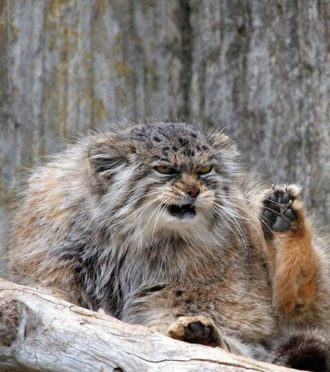
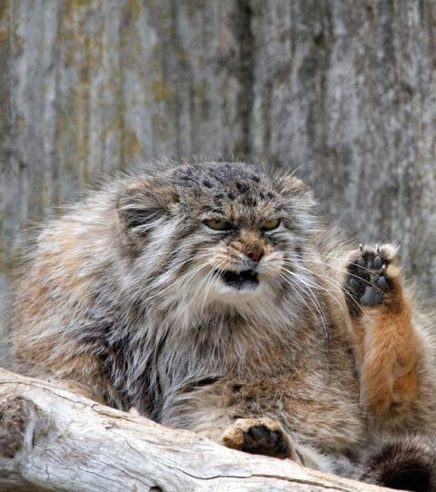

Herzlich Willkommen
Dies ist die Startseite von "Zoo von Ben". Schau dir die Videos und Bilder an! Falls du weitere Informationen benötigst, gehe auf die Informations-Seite
Dies ist die Startseite von "Zoo von Ben". Schau dir die Videos und Bilder an! Falls du weitere Informationen benötigst, gehe auf die Informations-Seite

 
